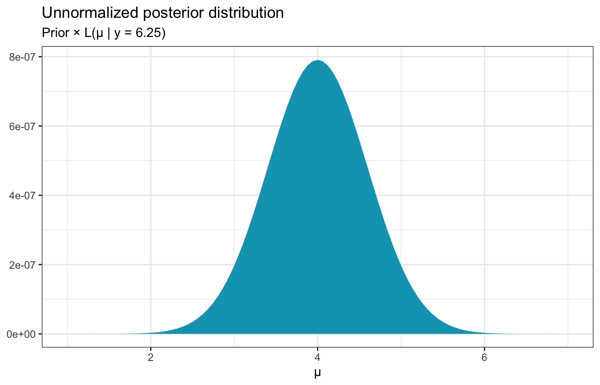

library(tidyverse)
library(patchwork)
# Plot stuff
clrs <- MetBrewer::met.brewer("Lakota", 6)
theme_set(theme_bw())
# Seed stuff
set.seed(1234)Reading notes
MCMC under the Hood
7.1: The Big Idea
(SO EXCITED FOR THIS)
Stan uses Hamiltonian Monte Carlo sampling; JAGS uses Gibbs sampling. Both of these are enhanced versions of the fundamental Metropolis-Hastings algorithm for sampling, which we’ll implement here (yay!)
Think of Markov chains as a tour around the range of posterior possible values of a parameter (like µ or π or whatever). The chains move around that parameter and hopefully converge around it, but the chains need a tour manager to do that properly.
Trace plots show the tour route; density plots show the relative amount of time spent at each stop or parameter region during the tour.
The tour manager’s goal is “to ensure that the density of tour stops in each μ region is proportional to its posterior plausibility”
We can automate the tour managing process with an algorithm, like the Metropolis-Hastings algorithm, which consists of two steps.
Assume the Markov chain is at location \(\mu^{(i)}\) currently. In order to choose the next tour stop, or \(\mu^{(i + 1)}\), follow this process:
- Propose a random location for the next tour stop: \(\mu^\prime\)
- Decide whether to go to \(\mu^\prime\) or stay at the current location \(\mu^{(i)}\) for another iteration
That’s it. This simplified special version of Metropolis-Hastings is called the Monte Carlo algorithm.
Here’s how to implement it. Assume we have a posterior (calculated with magical conjugate prior families) like this:
\[ \mu \sim \mathcal{N}(4, 0.6^2) \]
We can draw random values from that distribution and tour it:
mc_tour <- tibble(
mu = rnorm(5000, mean = 4, sd = 0.6)
) |>
mutate(.iteration = 1:n())
# Trace plot
mc_tour |>
ggplot(aes(x = .iteration, y = mu)) +
geom_line(size = 0.1, alpha = 0.75)
# Density plot
mc_tour |>
ggplot(aes(x = mu)) +
geom_histogram(aes(y = ..density..),binwidth = 0.25,
color = "white", fill = clrs[2]) +
geom_function(fun = ~dnorm(., 4, 0.6), color = clrs[3])Neat! The trace plot shows that the tour was stable and had good coverage; the density plot shows that most of the time was spent around 4.
But this Monte Carlo algorithm is way too easy. We already know the posterior here! MCMC is great for approximating the posterior when math is too hard; if we can get the posterior through conjugate magic, there’s no need to then randomly sample and tour the posterior.
So what do we do if we don’t know the true posterior? We do know some of the posterior—the whole point of Bayes’ rule is that the posterior is proportional to the prior and the likelihood:
\[ \begin{aligned} \text{Posterior} &\propto \text{Prior} \times \text{Likelihood} \\ f(\mu \mid y = 6.25) &\propto f(\mu) \times L(\mu \mid y = 6.25) \end{aligned} \]
plot_data <- tibble(mu = seq(1, 7, length.out = 101)) |>
mutate(likelihood = dnorm(6.25, mean = mu, sd = 0.75),
prior = dnorm(mu, 0, 1)) |>
mutate(unnormalized = likelihood * prior)
ggplot(plot_data, aes(x = mu, y = unnormalized)) +
geom_area(fill = clrs[1]) +
labs(x = "µ", y = NULL,
title = "Unnormalized posterior distribution",
subtitle = "Prior × L(µ | y = 6.25)")
This distribution isn’t quite correct—it’s not scaled correctly—but it does “preserve the shape, central tendency, and variability of the actual posterior”. So we know something about the posterior that we can work with, and that can influence the sampling procedure.
Metropolis-Hastings also does another neat thing. Instead of just choosing a new stop at random, it uses a proposal model to propose possible stops. There are lots of possible proposal models—in Bayes Rules they use a uniform proposal model with a half-width parameter \(w\) that adds a window, or range, or neighborhood around the current µ location in the chain, or the current stop.
So if we’re currently at \(\mu^{(i)}\), the proposal for the next stop will be drawn from a window of \(\mu^{(i)} \pm w\), or more formally:
\[ \mu^\prime \sim \operatorname{Uniform}(\mu^{(i)} - w, \mu^{(i)} + w) \]
If we’re currently at \(\mu = 3\), for instance, and we’re using a half-width \(w\) of 1, the proposal for the next draw will come from runif(n = 1, min = 2, max = 4):
ggplot(plot_data, aes(x = mu, y = unnormalized)) +
geom_area(fill = clrs[1]) +
labs(x = "µ", y = NULL,
title = "Unnormalized posterior distribution",
subtitle = "Prior × L(µ | y = 6.25)") +
scale_x_continuous(breaks = 1:7) +
annotate(geom = "segment", x = 2, xend = 4, y = 2e-7, yend = 2e-7) +
annotate(geom = "segment", x = 3, xend = 3, y = 2e-7, yend = 0, linetype = "21")The second step in the algorithm then decides if the proposal should be accepted or rejected. If the proposed \(\mu^\prime\) is bad, the chain will hang out for a round before making another proposal, checking if it’s good, and then maybe moving on.
If we’re currently at 3 and we draw from \(\operatorname{Uniform}(2, 4)\) and get a 3.8, is that good? Yeah. That fits nicely in the unnormalized posterior distribution, so we should go there. If the uniform distribution proposes a 2, that’s probably not great—that’s really rare.
7.2: The Metropolis-Hastings algorithm
So in general, Metropolis-Hastings does this:
- Propose a random location for the next tour stop, \(\mu^\prime\), by drawing it from a proposal model
- Decide whether to go to \(\mu^\prime\) or stay at the current location \(\mu^{(i)}\) for another iteration, based on this process:
- If the unnormalized posterior plausibility of \(\mu^\prime > \mu^{(i)}\), then definitely go there
- Otherwise maybe go there
That “maybe go there” part is determined based on an acceptance probability \(\alpha\). It’s like a weighted coin flip—if it’s heads, which has probability \(\alpha\), go there; if it’s tails, which has probability \(1 - \alpha\), stay:
\[ \mu^{(i+1)} = \begin{cases} \mu^\prime & \text{ with probability } \alpha \\ \mu & \text{ with probability } 1 - \alpha \end{cases} \]
Formally, the weightedness of this coin flip (or the acceptance model in general) comes from the Metropolis algorithm, which has a symmetric proposal model. It looks like this:
\[ \alpha = \min\left\lbrace 1, \; \frac{f(\mu^\prime)\ L(\mu^\prime \mid y)}{f(\mu)\ L(\mu \mid y)} \right\rbrace \]
Oof that’s a mess. Through some algebra (dividing the numerator and denominator by \(f(y)\)), we get this:
\[ \alpha = \min\left\lbrace 1, \; \frac{f(\mu^\prime)\ L(\mu^\prime \mid y)\ /\ f(y)}{f(\mu)\ L(\mu \mid y)\ /\ f(y)} \right\rbrace = \min\left\lbrace 1, \; \frac{f(\mu^\prime \mid y)}{f(\mu \mid y)} \right\rbrace \]
The key part is \(f(\mu^\prime \mid y)\) and \(f(\mu \mid y)\), or how well \(\mu\) and \(\mu^\prime\) fit in the unnormalized posterior. We look at the ratio of their plausibilities:
\[ \frac{\text{Plausibility of proposed } \mu^\prime \text{ in unnormalized posterior}}{\text{Plausibility of current } \mu \text{ in unnormalized posterior}} \]
There are two possible outcomes with this ratio:
If the plausibility of the proposed draw is ≥ the current draw (\(f(\mu^\prime \mid y) \geq f(\mu \mid y)\)), \(\alpha\) will be 1, since the ratio will be > 1 (like 0.5 / 0.3 would be 1.666; 4 / 3.9 would be 1.02; and so on). The decision rule says to take the minimum of 1 and the plausibility ratio, so here the minimum is 1 and so \(\alpha\) is 1. This is the “Definitely go there” part of the algorithm.
If the plausibility of the proposed draw is < the current draw (\(f(\mu^\prime \mid y) \lt f(\mu \mid y)\)), then the ratio will be less than 1 (like 0.3 / 0.5 would be 0.6; 3.9 / 4 would be 0.975; and so on), so \(\alpha\) would be that ratio and not 1 (again, we’re taking the minimum of the two). That ratio then becomes our probability of going to the new draw. The closer the proposed plausibility is to the current plausibility, the higher the chances of visiting there. This is the “Maybe go there” part of the algorithm.
We can write this algorithm with code:
one_mh_iteration <- function(w, current) {
# Step 1
# Propose the next mu by choosing a value from a uniform distribution with a
# window of ±w around the current mu
proposal <- runif(1, min = current - w, max = current + w)
# Step 2
# Decide whether or not to go there
# The plausibility is the prior * likelihood
proposal_plausibility <- dnorm(proposal, 0, 1) * dnorm(6.25, proposal, 0.75)
current_plausibility <- dnorm(current, 0, 1) * dnorm(6.25, current, 0.75)
# Calculate the alpha, taking the minimum of 1 or the ratio of plausiblities
alpha <- min(1, proposal_plausibility / current_plausibility)
# Determine the next stop based on the alpha
next_stop <- sample(c(proposal, current), size = 1, prob = c(alpha, 1 - alpha))
return(tibble(proposal, alpha, next_stop))
}So if we’re currently at 3, let’s figure out a next stop with a window of ±1:
set.seed(8)
one_mh_iteration(w = 1, current = 3)
## # A tibble: 1 × 3
## proposal alpha next_stop
## <dbl> <dbl> <dbl>
## 1 2.93 0.824 2.93This iteration proposes going to 2.93. The ratio of plausibilities is less than one here, so we get an alpha of 0.82. The probability of deciding to move from 3 to 2.93 is thus also 0.82. In this case, we accept the proposal and decide to move on, so the next stop is 2.93.
In this case, if we’re at 3 and we get a proposal of 2.018, the ratio is really small (0.02), so the probability when deciding to “maybe move on” is tiny. We end up staying at 3.
set.seed(83)
one_mh_iteration(w = 1, current = 3)
## # A tibble: 1 × 3
## proposal alpha next_stop
## <dbl> <dbl> <dbl>
## 1 2.02 0.0171 37.3: Implementing the Metropolis-Hastings algorithm
That’s the hard part! The rest involves just looping through a bunch of values. We’ll do that with a function:
mh_tour <- function(start = 3, N, w) {
# Step 1
# Start the chain at some location
current <- start
# Step 2
# Create an empty vector with enough slots to hold all these draws
mu <- rep(0, N)
# Step 3
# Markov chain time
for (i in 1:N) {
# Do one iteration
where_next <- one_mh_iteration(w = w, current = current)
# Save this in the vector
mu[i] <- where_next$next_stop
# Tell the algorithm where we are now
current <- where_next$next_stop
}
# Step 4
# Return all the chain values
# (use tidybayes name conventions)
return(tibble(.iteration = c(1:N), mu))
}Here we go! Let’s make a chain with 5000 values with a uniform proposal model with a window \(w\) of ±1:
set.seed(84735)
tour_1 <- mh_tour(start = 3, N = 5000, w = 1)
# Trace plot
tour_1 |>
ggplot(aes(x = .iteration, y = mu)) +
geom_line(size = 0.1, alpha = 0.75)
# Density plot
tour_1 |>
ggplot(aes(x = mu)) +
geom_histogram(aes(y = ..density..),binwidth = 0.25,
color = "white", fill = clrs[2]) +
geom_function(fun = ~dnorm(., 4, 0.6), color = clrs[3])AHHHHHHH THAT’S AWESOME!!!!!!!!!11!!1!1!!
Fun times with parallel chains
For bonus fun and excitement, I’ll do four parallel chains with 4 random starting values drawn from \(\operatorname{Uniform}(0, 10)\) (because why not)
library(furrr)
plan(multisession, workers = 4)
set.seed(123)
four_tours <- tibble(.chain = 1:4) |>
mutate(start = runif(n(), 0, 10)) |>
mutate(tour = future_map(start, ~mh_tour(start = ., N = 5000, w = 1),
.options = furrr_options(seed = TRUE)))
four_tours
## # A tibble: 4 × 3
## .chain start tour
## <int> <dbl> <list>
## 1 1 2.88 <tibble [5,000 × 2]>
## 2 2 7.88 <tibble [5,000 × 2]>
## 3 3 4.09 <tibble [5,000 × 2]>
## 4 4 8.83 <tibble [5,000 × 2]>LOOK AT THIS TRACE PLOT
four_tours |>
unnest(tour) |>
filter(.chain < 2500) |>
ggplot(aes(x = .iteration, y = mu, color = factor(.chain))) +
geom_line(size = 0.1, alpha = 0.75) +
labs(color = "Chain")LOOK AT THIS TRANK PLOT
four_tours |>
unnest(tour) |>
mutate(draw_rank = rank(mu)) |>
ggplot(aes(x = draw_rank)) +
stat_bin(aes(color = factor(.chain)), geom = "step", binwidth = 500,
position = position_identity(), boundary = 0) +
labs(color = "Chain") +
theme(axis.text.y = element_blank(), axis.title.y = element_blank(), axis.ticks.y = element_blank())LOOK AT THE DENSITIES ACROSS CHAINS
# Density plot
four_tours |>
unnest(tour) |>
ggplot(aes(x = mu, color = factor(.chain))) +
geom_density() +
labs(color = "Chain")This even works with posterior functions like ess_basic. Our effective sample size ratio isn’t that great—our 20,000 Markov chain values are as useful as only 2,400 independent samples(0.12 × 20000).
posterior_mu <- four_tours |> unnest(tour) |> pull(mu)
posterior::ess_basic(posterior_mu)
## [1] 2379.859
# neff_ratio
posterior::ess_basic(posterior_mu) / 20000
## [1] 0.118993And we can look at autocorrelation, which isn’t great. It takes a while for the chains to settle and the chains have a longer memory—we don’t hit 0ish correlation until 13 lags!
autocor_manual <- four_tours |>
unnest(tour) |>
group_by(.chain) |>
nest() |>
summarize(autocor = map(data, ~{
x <- acf(.$mu, plot = FALSE, lag.max = 20)
tibble(lag = x$lag, acf = x$acf)
})) |>
unnest(autocor)
ggplot(autocor_manual, aes(x = lag, y = acf, color = factor(.chain))) +
geom_line() +
scale_x_continuous(breaks = 0:20) +
labs(x = "Lag", y = "Autocorrelation", color = "Chain") +
theme(panel.grid.minor = element_blank())Finally, here’s the overall simulated posterior, after throwing away the first 2,500 draws in each chain as warmups (just like we do with Stan):
four_tours |>
unnest(tour) |>
filter(.iteration > 2500) |>
ggplot(aes(x = mu)) +
geom_density(aes(fill = "Simulated posterior"), color = FALSE) +
geom_function(fun = ~dnorm(., 4, 0.6), aes(color = "True posterior")) +
scale_fill_manual(values = c(clrs[2]), name = NULL) +
scale_color_manual(values = c(clrs[3]), name = NULL)SO SO COOL!
7.4: Tuning the Metropolis-Hastings algorithm
Phew. One final wrinkle to play with. We arbitrarily set \(w = 1\) here for the window, which defines how wide the neighborhood of possible proposals is. That \(w\) term matters a lot—too wide and we’ll bounce around way too much and never settle; too narrow and we’ll get stuck around the initial value.
This \(w\) is equivalent to the step size.
set.seed(7)
sim_too_wide <- mh_tour(N = 5000, w = 100)
set.seed(84735)
sim_too_narrow <- mh_tour(N = 5000, w = 0.01)
too_wide <- ggplot(sim_too_wide, aes(x = .iteration, y = mu)) +
geom_line(color = clrs[4]) +
geom_hline(yintercept = 4, color = clrs[2], linetype = "dotted") +
ylim(c(1.6, 6.4)) +
labs(title = "w too wide")
too_narrow <- ggplot(sim_too_narrow, aes(x = .iteration, y = mu)) +
geom_line(color = clrs[5]) +
geom_hline(yintercept = 4, color = clrs[2], linetype = "dotted") +
ylim(c(1.6, 6.4)) +
labs(title = "w too narrow")
too_narrow | too_wide